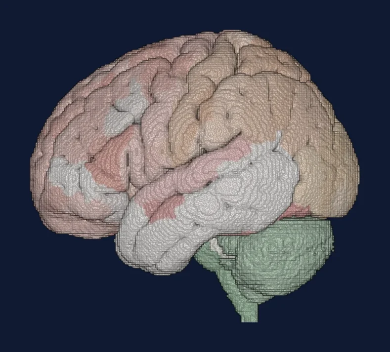

Esto no es la web ni el visor: son pantallas de ejemplo para decidir cómo será Neuro Atlas. Los cerebros son fotos fijas del prototipo de S3; los botones solo cambian de pantalla.
Los recuadros amarillos de borde discontinuo son huecos: ahí irá contenido que todavía no existe (textos verificados, tu revisión). Lo marcado ejemplo es solo para enseñar el formato.
Ordenador
Esto no es consejo médico. Ante cualquier duda de salud, consulta a un profesional.
Gira los dos cerebros y toca una zona para saber qué hace. ¿En qué se parecen un cerebro humano y uno de rata?

Superficie orden de ejemplo: lo decide Sofía
Interior
Ordenador, con una conexión lenta
Esto no es consejo médico. Ante cualquier duda de salud, consulta a un profesional.
Gira los dos cerebros y toca una zona para saber qué hace. ¿En qué se parecen un cerebro humano y uno de rata?
Ordenador · has tocado el hipocampo de la rata
Esto no es consejo médico. Ante cualquier duda de salud, consulta a un profesional.
CA1, CA2, CA3, DG y Subc (Julich-Brain)
◐ Equivalencia parcialgrado de ejemplo
Ordenador · «Más opciones» abierto, con el corte activado
Ordenador · ficha completa (también se lee bien en el móvil)
Esto no es consejo médico. Ante cualquier duda de salud, consulta a un profesional.
Neuro Atlas › Rata › Formación hipocampal
Rata · atlas Waxholm v4.01 · Ver en el atlas 3D
CA1, CA2, CA3, DG y Subc · ◐ Equivalencia parcialejemplo
ejemplo Saldrá de los estudios clasificados; cada técnica enlaza a Neuro Lab.
HF · CA1 · DG → glosario
Waxholm ID 1021 · HF · Hippocampal formation
Regiones: Waxholm v4.01, CC BY 4.0 (Kleven et al. 2023, Nature Methods). Textos: SYNAPTICA, CC BY-SA 4.0.
Móvil
No es consejo médico.
Toca una zona para saber qué hace. ¿Humano y rata, en qué se parecen?
Móvil · has tocado el hipocampo de la rata
No es consejo médico.
En el humano: CA1, CA2, CA3, DG y Subc
◐ Parcialejemplo
Móvil · «Lado a lado»
No es consejo médico.
Formación hipocampal · ◐ Parcialejemplo
Página «Créditos del atlas» (dentro de «Fuentes y licencias»)
Esto no es consejo médico. Ante cualquier duda de salud, consulta a un profesional.
Cada cerebro sale de atlas distintos, cada uno con su licencia. Nunca combinamos datos de dos atlas en uno: los enseñamos uno al lado del otro.
Y en la web: el visor Niivue (BSD-2-Clause), la tinción BigBrain y los cortes de Nissl de la rata, con su licencia.